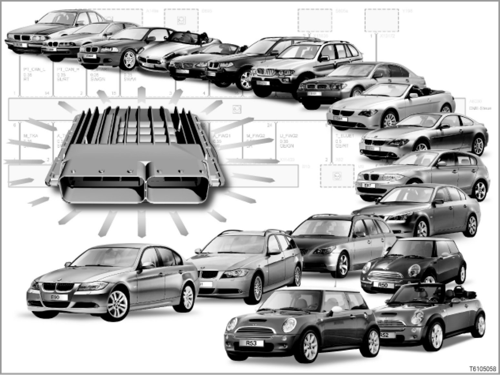

00 02 05 (141) Glossary of Electrical Components
00 02 05 (141)
Glossary of electrical components
All models from E38 and MINI

Introduction
This glossary contains electrical components from the circuit diagrams found in diagnosis, together with the respective abbreviated designations for the components.
Abbreviated designations are the descriptions of the components found in the circuit diagrams. Example: "A210" for the control unit "door module, rear passenger side".
This glossary contains approx. 2,000 abbreviated designations.
This glossary contains the following information:
- Abbreviated designation (alphanumerically sorted)
- Component
- Information: Reference to a component description in an SI Technology bulletin (SBT).
If there is not a more detailed description of the component available, a short description of the component will be given in column headed "Information".
- KoGr.: Main group for the component
Each abbreviated designation with component is assigned to a main group.
An overview of the main groups can be found in the SI Technology bulletin (SBT) "Abbreviations".
[for more information, please refer to SI Technology (SBT) 00 01 03 035]
- Model series: Overview of model series in whose circuit diagrams the abbreviated designation is found.
Note: For up-to-date information, please refer to the BMW diagnosis system.
This glossary contains the abbreviated designations for the following circuit diagrams:
- Circuit diagram...DVD "BMW V 5.0", status 03/05 (WDS: Wiring Diagram System):
This DVD contains the circuit diagrams needed for diagnosis on BMW vehicles.
- Circuit diagram...DVD "MINI V 3.0", status 03/05 (WDS: Wiring Diagram System):
This DVD contains the circuit diagrams needed for diagnosis on MINI vehicles.
This glossary contains the abbreviated designations used in both these DVDs. Abbreviated designations that are only found in the overviews "Component... and signal information" are not contained in this glossary.
Note: Assignment of abbreviated designation to model series
For technical reasons associated with the system, some model series are listed together, as follows:
- E60 and E61
- E63 and E64
- E65 and E66
- E83 and E85
- E87 and E90
- R50, R52 and R53
For this reason, it is possible that an abbreviated designation is assigned to a model series even though the component concerned is not found in that model series.
Alphanumerical overview of abbreviated designations
The WDS...DVD (Wiring Diagram System) alphanumerically lists the abbreviated designations from the overview "Component... and signal information".
Abbreviated designations are alphabetically sorted in the following groups:
A - Control units, modules
B - Sensors, electric converters
[Editing not yet complete ...]
D - Diagnosis interfaces
[Editing not yet complete ...]
E - Lights, electric heating equipment
[Editing not yet complete ...]
F - Fuses
[Editing not yet complete ...]
G - Power supply, gas generators
[Editing not yet complete ...]
H - Acoustic and visual warning systems
[Editing not yet complete ...]
I - Components from BMW suppliers
[Editing not yet complete ...]
K - Relays
[Editing not yet complete ...]
L - Coils
[Editing not yet complete ...]
M - Electric motors, drives
[Editing not yet complete ...]
N - Amplifiers, regulators, control units
[Editing not yet complete ...]
P - Display instruments
[Editing not yet complete ...]
R - Resistors, potentiometers
[Editing not yet complete ...]
S - Switches, buttons
[Editing not yet complete ...]
T - Ignition coils
[Editing not yet complete ...]
U - Radio systems, suppressor filters
[Editing not yet complete ...]
V - Semiconductors, diodes
[Editing not yet complete ...]
W - Aerials, screening
[Editing not yet complete ...]
X - Connectors
Connectors are not listed in this glossary.
Y - Electromechanical components
[Editing not yet complete ...]
Z - Blocking circuits, suppressor filters
[Editing not yet complete ...]
Subject to change.